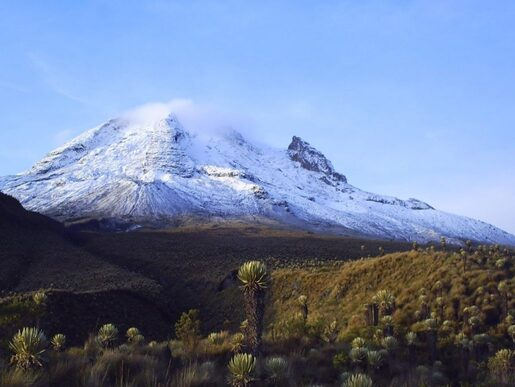

<div class="col-md-8" align ="justify">
    
    <p > 
        Su extensión cubre parte de los departamentos de Caldas, Risaralda, Quindío y Tolima. Entre sus principales atractivos encontramos el sistema volcánico, los variados ecosistemas, paisajes, lagunas y las nieves perpetuas de los diferentes nevados.
        Atractivos:
        <br>
        – Nevado del Ruiz
        <br>
        –Nevado del Tolima
        <br>
        – Nevado de Santa Isabel
        <br>
        – Cráter de la Olleta
        <br>
        – Paramillos(El Cisne,Santa Rosa,Quindío y Morronegro)
        <br>
        – Laguna del Otún
        <br>
        – Laguna Verde Encantada
        <br>
        – Valle Lunar
        <br>
        – Termales
        <br>
        …entre otros. 
        <br>
        Se puede llegar en automóvil hasta el nevado del Ruiz por la vía que conduce de Manizales hacia Bogotá. Recomendados vehículos 4×4. EnBrisas, se le dará inducción al turista sobre las medidas y recomendaciones a tener en cuenta para el ascenso; se le asignara
        un guía experto que le acompañara en su recorrido y deberá cancelar el valor del ingreso al parque de acuerdo a las tarifas vigentes. Debido a las condiciones climáticas y volcánicas del lugar, puede haber restricciones para el ingreso. Se recomienda
        llamar con anterioridad a la Concesión Nevados, encargada de la administración y conservación del parque.
        <br> Ruta terrestre
        <br> A) Desde el Municipio de Manizales se puede llegar,  por la vía principal que conduce a Bogotá,  se toma el desvió en el Km
        23 a mano derecha en el parador turístico La Esperanza. Desde ahí se continúa 14 Km hasta el cruce del municipio de Murillo (Tolima), a mano derecha se toma un desvío de 1 Km de carretera destapada que conduce al ingreso al Parque en el sector
        de “Brisas”.
        <br>
         B) En el departamento de Risaralda, se ingresa por Pereira vía La Florida – La Suiza – El Cedral hasta donde llega vehículo. Desde allí se inicia un camino de herradura que conduce al Parque por el sector de la Laguna de Otún (entre
        siete y nueve horas). A la Laguna del Otún también se puede llegar saliendo desde Santa Rosa de Cabal por la vía que pasa por Termales de San Vicente y conduce hasta el sector de Potosí (cabaña Parque), para luego emprender una caminada de tres
        horas hasta la Laguna del Otún.
        <br>
         C) En el departamento del Tolima se ingresa por Ibagué por la ruta Villa Restrepo – Juntas hasta donde llegan los vehículos, luego  se inicia una caminata con destino a los termales Cañón. También se ingresa por
        el municipio de Anzóategui vía Palomar, hasta la vereda La Cascada donde ingresa vehículo. Desde allí se inicia la caminata  hacia Mesetas, Termales Cañón y el Nevado del Tolima. Se recomienda a los visitantes informarse bien y contratar los servicios
        de un guía.
        <br>
         D) En el departamento del Quindío, se realiza el ingreso por Salento, carretera hacia  el Valle del Cócora, donde se inicia el ascenso por camino hasta el páramo de Romerales, continuando la ruta hacia Termales Cañón en el departamento
        del Tolima, o hacia la vereda el Bosque en el municipio de Pereira departamento de Risaralda.
        <br> Si está interesado en visitar el Parque comuníquese con Parque Nacional Natural Los Nevados: Teléfono: (6) 887 1611 – 8872273 Manizales, Caldas
        <br>Dirección: Carrera 23 #70A-44 barrio La Camelia.
        <br>Email: nevados@parquesnacionales.gov.co
        <br>
         Atención al usuario Parques Nacionales: Dirección: Cra. 10 No. 20 – 30 Bogotá – Colombia
         <br>Teléfono: PBX (57 1) 353 2400 Ext. 138, 139Email: ecoturismo@parquesnacionales.gov.co
         <br>
        Más información sobre actividades y tarifas del parque de los Nevados en: www.parquesnacionales.gov.co

    </p>
</div>